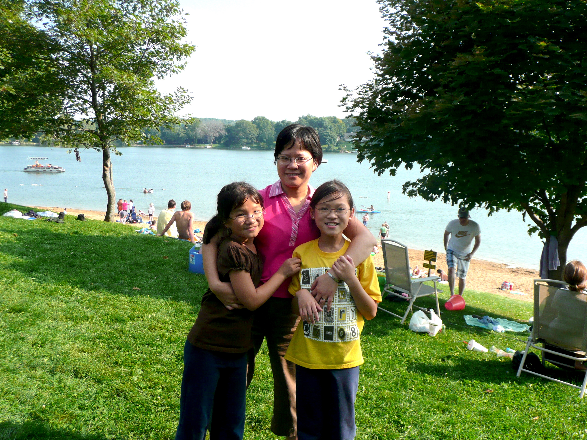

(where I was born and no, no I wasn't born in China)
I was born on October 12, 1998, in Sydney, Australia. There isn't much that I remember from the short time I lived there, but it is a part of myself I want to go back to in the future. I will definitely visit my birthplace sometime in my life and experience the place my parents lived for 15 years when they first left China to start a new life. There are so many stories my parents have told me about this country and I want to connect with them.
Nashville, Tennessee
(moved when I was 3)
Most of my childhood memories are from this city. It is the first place my parents lived in in America and it is where I grew up. Here, I made lots of friends and learned many new things.
First snow ft. Barney
(binge watching shows since 2005)
When I was little, I was very slow-to-warm up to people. I didn't talk much in school and it took courage for me to first talk to someone. My little sister was and still is someone I can talk to about anything. However, once I made friends, I was hyper, talkative, and imaginative. School was fun and exciting with friends I could talk to and teachers I could trust. I made lots of bonds with people in Nashville.
First trip to China
(whoo I'm on my pretend rollercoaster!)
The first time I went to China, I finally began to understand where I came from and who I was. Nashville was pretty diverse and I was lucky to go to an elementary school that championed differences and embraced our diverse cultural backgrounds. Meeting many of my relatives for the first time, I felt a deep-rooted connection I had never felt before. As an ABC (Australian Born Chinese), it is hard to connect the culture I was born into and the culture I grew up in. Going to China and walking on the Great Wall of China, visiting the Forbidden Palace and other landmarks opened my eyes to a rich history that is a part of who I am.
Iowa City, Iowa
(moved before 4th grade)
Leaving Nashville was one of the hardest things I have had to do in my life. I left a place where I finally began to show my true personality and leave some of my shyness behind. When I moved to Iowa City, I was resentful and angry at my parents for uprooting my family to a new place.

Lake Macbride
(featuring Eakin t-shirt)
Every day at my new elementary, Horn, I would wear a different t-shirt from my old school in Nashville, Eakin, to show my allegiance. I was stubborn and unwilling to accept this new school with its new ways. It took weeks of sulking and sitting by myself at recess before I started to adjust to a new school. However, I made a couple friends and kept to myself during class. I retreated back to being shy and unable to be myself at school.